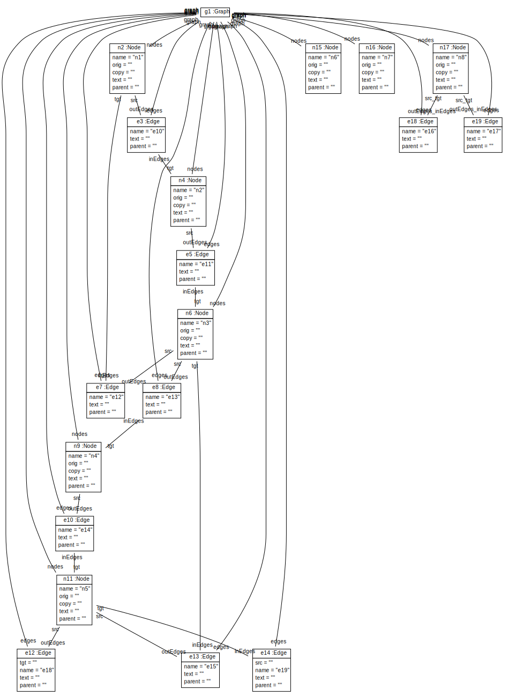
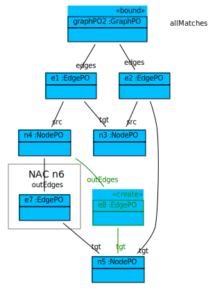
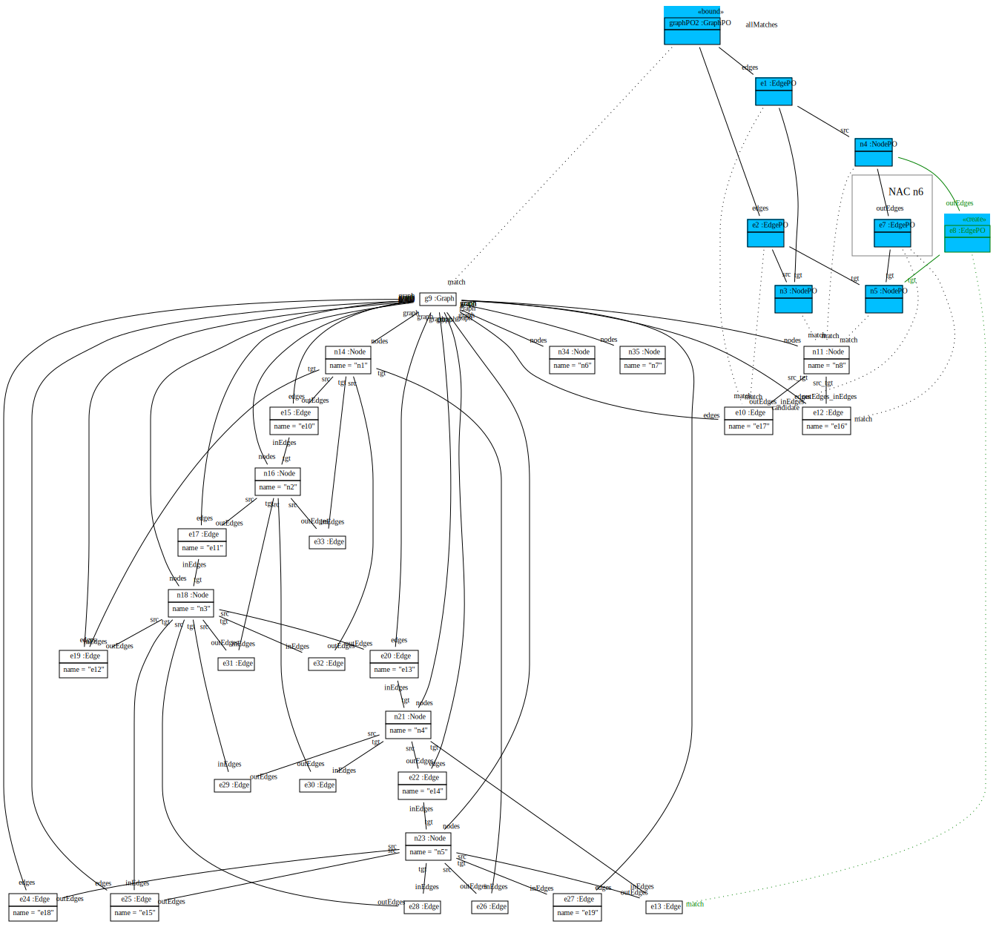
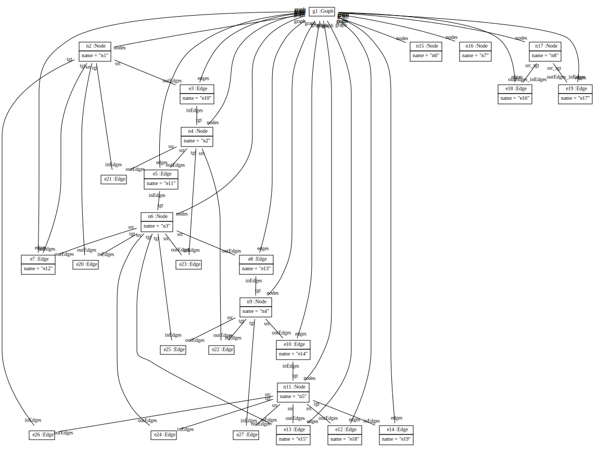

Scenario TTC2011InsertTransitiveEdges
Insert transitive edges.
Start graph:
Transformation:
private int insertTransitiveEdges(Graph graph)
{
ModelPattern p = new ModelPattern();
GraphPO graphPO = p.hasElementGraphPO(graph).withPatternObjectName("graphPO2");
EdgePO firstEdgePO = graphPO.hasEdges();
EdgePO secondEdgePO = graphPO.hasEdges();
NodePO joinNodePO = firstEdgePO.hasTgt();
secondEdgePO.hasSrc(joinNodePO);
NodePO startNodePO = firstEdgePO.hasSrc();
NodePO endNodePO = secondEdgePO.hasTgt();
startNodePO.startNAC().hasOutEdges().hasTgt(endNodePO).endNAC();
p.startCreate();
startNodePO.hasOutEdges().hasTgt(endNodePO);
return p.allMatches();
}

Transformation with matches:
We have inserted 8 new transitive edges. Result graph:
For comparison a Java solution: